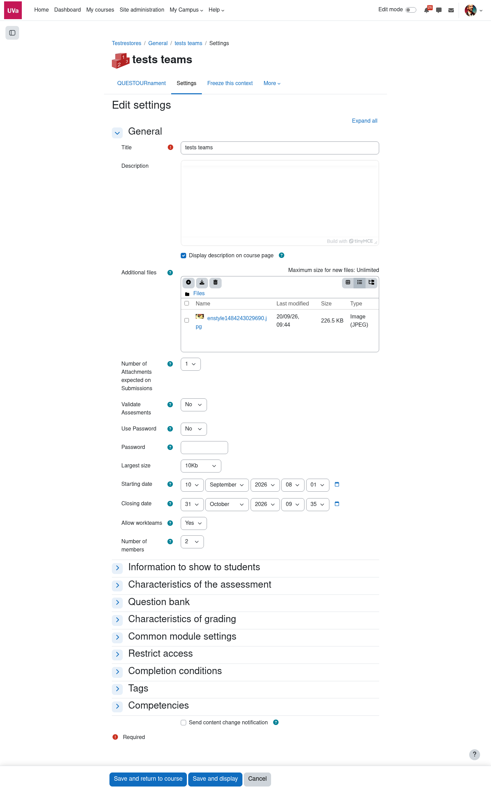
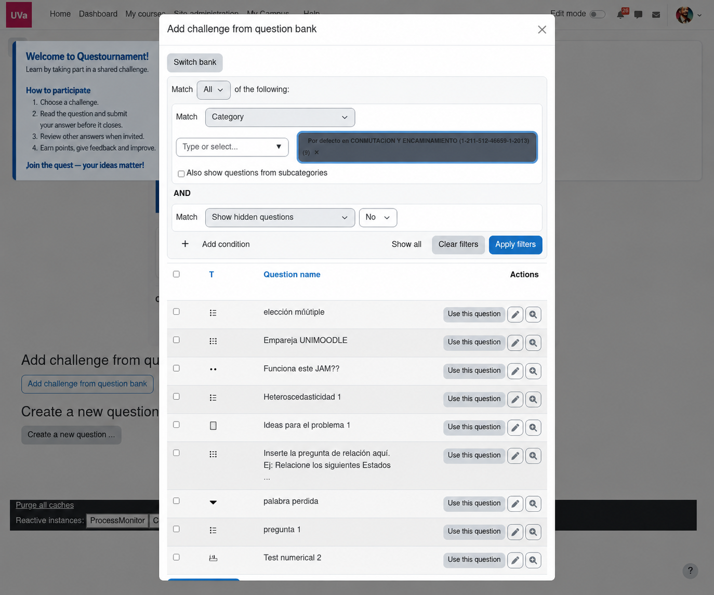

Atlas / Guía de implantación
Traza tu recorrido en Questournament.
Una guía interior con hitos claros, capturas y enlaces al manual completo. La estructura sirve para orientarse sin perder el contexto del proceso docente.
Punto de partida
Prepara el terreno.
Crea la actividad en Moodle y define la ventana temporal, la participación individual o por equipos, y las rúbricas que harán comprensible la evaluación.
- Selecciona Questournament en el selector de actividades.
- Configura fechas y criterios antes de invitar a participar.
- Decide si el alumnado puede usar el banco de preguntas.

Primeros desafíos
Elige las preguntas.
Un desafío puede ser abierto o reunir varias preguntas del banco. Ordena cada pregunta, ajusta su puntuación y revisa el desafío antes de publicarlo.

Durante la actividad
Lee el recorrido de cada respuesta.
Combina el resultado de las preguntas autocorregibles con la revisión manual de las que la necesiten. Usa las rúbricas y los comentarios para que el alumnado comprenda cómo avanzar.
Consulta la evidencia docente para distinguir los estudios sobre la metodología de las funciones incorporadas posteriormente al plugin.
Abrir el manual completo →